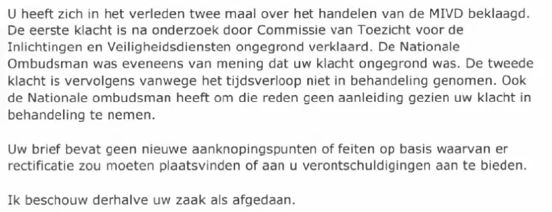

Bewijsstuk · Brief
Ministerie van Defensie aan Giltay, 6 juni 2017
De passage
“U heeft zich in het verleden twee maal over het handelen van de MIVD beklaagd. De eerste klacht is na onderzoek door Commissie van Toezicht voor de Inlichtingen en Veiligheidsdiensten ongegrond verklaard. De Nationale Ombudsman was eveneens van mening dat uw klacht ongegrond was. De tweede klacht is vervolgens vanwege het tijdsverloop niet in behandeling genomen. Ook de Nationale ombudsman heeft om die reden geen aanleiding gezien uw klacht in behandeling te nemen. Uw brief bevat geen nieuwe aanknopingspunten of feiten op basis waarvan er rectificatie zou moeten plaatsvinden of aan u verontschuldigingen aan te bieden. Ik beschouw derhalve uw zaak als afgedaan.” Pagina 1 van het antwoord, pagina 2 van de pdf, de tweede, derde en vierde alinea, hier aaneengesloten. De brief noemt het toezichtsorgaan ‘Commissie van Toezicht voor de Inlichtingen en Veiligheidsdiensten’, doorgaans bekend als CTIVD, en doet dat zonder lidwoord. Hij schrijft ook ‘Ombudsman’ met een hoofdletter in de ene zin en twee zinnen verder ‘ombudsman’ zonder hoofdletter. Beide zijn hier overgenomen zoals ze staan.

Waarom dit document telt
In deze brief van 6 juni 2017 wijst het Ministerie van Defensie Giltays verzoek van 10 mei 2017 af om de ministeriële gekverklaring uit 1999 te rectificeren en excuses aan te bieden. Het beroept zich op een CTIVD-onderzoek en op het ombudsmanrapport uit 1999, die Giltays klacht over de MIVD allebei ongegrond zouden hebben verklaard, stelt dat zijn brief geen nieuwe aanknopingspunten of feiten bevat en besluit: “Ik beschouw derhalve uw zaak als afgedaan.”
Beide gronden waren toen al ontkracht: het ombudsmanrapport door het Gerechtshof Den Haag in 2016 en door de eigen brief van de ombudsman uit 2000, het CTIVD-onderzoek doordat de CTIVD al in 2009 had geschreven dat zij zijn klacht over de MIVD niet had onderzocht. Bovendien had Barbara Overduyn, Giltays voornaamste beschuldiger, ruim een jaar eerder in processtukken onweersproken gelaten dat hij haar bewering had weerlegd dat hij bij Casema, waar hij via Randstad als uitzendkracht werkte, zou zijn ontslagen.
Herkomst
- Document
- Antwoord namens de minister van Defensie op een verzoek om rectificatie en verontschuldigingen
- Van
- Ministerie van Defensie, Directie Juridische Zaken, Bestuurs-, Straf- en Tuchtrecht, Den Haag
- Aan
- E. Giltay, Den Haag
- Datum
- 6 juni 2017
- Kenmerk
- BS2017018158
- Onderwerp
- Uw brief van 10 mei 2017
- Verwijzingen
- Giltays brief van 10 mei 2017, opgenomen als pagina 1 van deze pdf, waarin hij de minister vraagt afstand te nemen van de gekverklaring uit 1999, die te rectificeren en zich te verontschuldigen, met Overduyns memorie van antwoord uit 2016 als bijlage
- Ondertekend
- Hoofd Bestuurs-, Straf- en Tuchtrecht, mr. J.J. Buirma, op verzoek van de minister
- Mandaat
- De brief geldt als antwoord van de minister van Defensie, Jeanine Hennis-Plasschaert, die er de verantwoordelijkheid voor draagt. De citaten in de stemmensectie noemen haar daarom.
- Taal
- Nederlands
- Zie ook
- Ministerie van Defensie aan de Nationale ombudsman, 2 maart 1999Rapport 1999/507 van de Nationale ombudsman, 17 december 1999Nationale ombudsman aan Giltay, 11 februari 2000CTIVD aan Giltay, 12 januari 2009CTIVD aan Giltay, 27 oktober 2009Memorie van antwoord van Overduyn aan het Gerechtshof Den Haag, 2 februari 2016Gerechtshof Den Haag, arrest van 12 april 2016 (ECLI:NL:GHDHA:2016:870)
Aangehaald in:
- het essay ‘Het verbod viel, het boek bleef overeind’ in de hoofdstukken (3) ‘Wat het boek onthult: de Srebrenica-doofpot’, (7) ‘Nooit een inhoudelijk antwoord’ en (10) ‘Barsten in de muur’
- de stemmensectie.
Document: https://
Laatst gewijzigd 13 september 2026, geraadpleegd 9 oktober 2026.

Deze pagina is een bewijsstuk bij het boek De doofpotgeneraal van Edwin Giltay en de bijbehorende website.